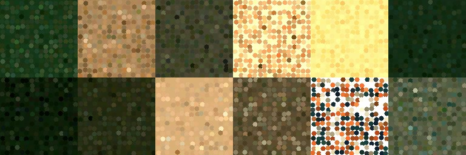
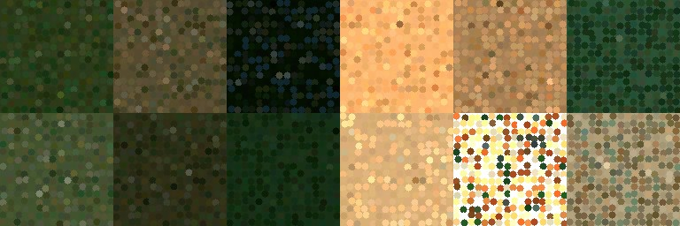

色の混在率のパターン化と有意性の検証
前回、地面から衛星画像に戻るような進め方をしてしまい、失礼しました。ご指示の手順で実行しました。
- 世界120地点で、色に意味の出る倍率の衛星画像を入手(1画素が約600mから約10mまでの7段階。使った画像の本当の細かさは約10mが最大)
- 画像から色を点描(1つの四角に32点)
- 点描の色を1024色に減色
- 点描を一定の四角(1辺16画素)で囲み、四角ごとの色の混在率を模様とする(形ではなく、色の割合のみ)
- 模様に規則性があるかを分析
- 模様と地面の種類の間に、有意な関係があるかを検証
- できなければ倍率を上げる
結果の概要
- 色の混在率には規則性があります。四角を12種類の型に分けると、見ていない別の地点でも5〜6割(約0.5〜0.58)が説明できます。混在率をでたらめに並べ替えた場合は2割前後なので、偶然ではありません。ただし、同じ地点内(6〜7割)よりは下がるので、地点ごとの癖も混ざっています。
- 型と地面の種類の間には、有意な関係があります。どの倍率でも、型と地面の種類を入れ替えた場合の乱数と比べて、5%の有意水準で有意でした(結びつきの強さを表す値は0.39〜0.48で、中くらい〜強め)。
- 倍率を上げても、良くなりませんでした。最も粗い倍率(1画素約600m)が最も強く(0.48)、細かくするほど少しずつ弱まります(約10mで0.39)。ご指示の「できなければ倍率を上げる」は、最初から成立したので、上げる必要がありませんでした。
- 特定の地面と有意に結びつく型は、一部だけです。砂漠(裸地・岩)、森、湿地、水の型は有意です。一方、草地・畑・低木が混ざった「オリーブ」「黄土色」の型は、どの種類とも有意に結びつきません。混ざった色は、混ざった地面です。
- 注意が必要な点があります。型を「平均の色だけ」で作った場合の結びつき(0.42〜0.54)は、混在率で作った場合(0.39〜0.48)と同じか、やや強いです。つまり、混在率の模様は、平均の色以上の情報を地面について加えてはいません。ただし、色の種類の多さ(下記)は、地面で大きく違います。
倍率別の結果
| 1画素 | 四角の大きさ | 見ていない地点の説明率 | でたらめの場合 | 結びつきの強さ(混在率) | 乱数との比較で有意か(p値) | (参考) 平均の色だけの結びつき |
|---|---|---|---|---|---|---|
| 約600m | 約10km | 58% | 16% | 0.483 | 0.0033 | 0.542 |
| 約300m | 約5km | 56% | 17% | 0.443 | 0.0033 | 0.494 |
| 約150m | 約2.5km | 56% | 21% | 0.419 | 0.0033 | 0.47 |
| 約75m | 約1.2km | 56% | 22% | 0.394 | 0.0033 | 0.488 |
| 約38m | 約600m | 47% | 22% | 0.386 | 0.0033 | 0.424 |
| 約19m | 約300m | 50% | 25% | 0.399 | 0.0033 | 0.415 |
| 約10m | 約150m | 45% | 26% | 0.389 | 0.0033 | 0.432 |
p値が0.0033なのは、乱数の入れ替え300回のうち、1回も実際の値に届かなかったことを表します。5%の有意水準を下回ります。
型の見本: 約75m(四角は約1.2km)

左上から右へ型1〜12。1024色のうち、その型の四角で実際に使われた色を、使われた割合どおりに点で打った見本です(私が作った合成で、実際の土地の写しではありません)。
型1 四角の16.3% ・ 色の種類(平均)20.8
57%19%11%6%
地面: 森48% ・ 草地27% ・ 畑21%
特定の種類との結びつきは有意でない
57%19%11%6%
地面: 森48% ・ 草地27% ・ 畑21%
特定の種類との結びつきは有意でない
型2 四角の7.9% ・ 色の種類(平均)13.7
37%24%20%6%
地面: 草地52% ・ 裸地・岩24% ・ 畑16%
特定の種類との結びつきは有意でない
37%24%20%6%
地面: 草地52% ・ 裸地・岩24% ・ 畑16%
特定の種類との結びつきは有意でない
型3 四角の8.1% ・ 色の種類(平均)19.7
51%21%6%5%
地面: 草地48% ・ 森15% ・ 低木14%
市街(結びつき8.4倍) ・ こけ(結びつき10.8倍)
51%21%6%5%
地面: 草地48% ・ 森15% ・ 低木14%
市街(結びつき8.4倍) ・ こけ(結びつき10.8倍)
型4 四角の7.1% ・ 色の種類(平均)10.1
50%25%9%8%
地面: 裸地・岩68% ・ 草地31% ・ 畑1%
裸地・岩(結びつき3.8倍)
50%25%9%8%
地面: 裸地・岩68% ・ 草地31% ・ 畑1%
裸地・岩(結びつき3.8倍)
型5 四角の2.5% ・ 色の種類(平均)2.8
99%0%0%0%
地面: 裸地・岩100%
裸地・岩(結びつき5.6倍)
99%0%0%0%
地面: 裸地・岩100%
裸地・岩(結びつき5.6倍)
型6 四角の19.2% ・ 色の種類(平均)12.8
87%7%2%2%
地面: 森97% ・ 草地1% ・ 畑1%
森(結びつき2.5倍)
87%7%2%2%
地面: 森97% ・ 草地1% ・ 畑1%
森(結びつき2.5倍)
型7 四角の4.8% ・ 色の種類(平均)12.8
63%27%5%2%
地面: 森84% ・ 水12% ・ 草地2%
特定の種類との結びつきは有意でない
63%27%5%2%
地面: 森84% ・ 水12% ・ 草地2%
特定の種類との結びつきは有意でない
型8 四角の8.2% ・ 色の種類(平均)17.4
69%13%7%6%
地面: 森56% ・ 草地31% ・ 湿地8%
湿地(結びつき11.5倍)
69%13%7%6%
地面: 森56% ・ 草地31% ・ 湿地8%
湿地(結びつき11.5倍)
型9 四角の3.3% ・ 色の種類(平均)3.7
83%8%3%2%
地面: 裸地・岩95% ・ 草地4% ・ 畑1%
裸地・岩(結びつき5.3倍)
83%8%3%2%
地面: 裸地・岩95% ・ 草地4% ・ 畑1%
裸地・岩(結びつき5.3倍)
型10 四角の10.6% ・ 色の種類(平均)18.2
47%27%5%4%
地面: 草地39% ・ 畑22% ・ 裸地・岩18%
特定の種類との結びつきは有意でない
47%27%5%4%
地面: 草地39% ・ 畑22% ・ 裸地・岩18%
特定の種類との結びつきは有意でない
型11 四角の6.9% ・ 色の種類(平均)2.4
29%19%15%12%
地面: 草地38% ・ 水23% ・ 裸地・岩18%
特定の種類との結びつきは有意でない
29%19%15%12%
地面: 草地38% ・ 水23% ・ 裸地・岩18%
特定の種類との結びつきは有意でない
型12 四角の5.0% ・ 色の種類(平均)15.4
37%23%15%6%
地面: 草地26% ・ 低木23% ・ 水18%
特定の種類との結びつきは有意でない
37%23%15%6%
地面: 草地26% ・ 低木23% ・ 水18%
特定の種類との結びつきは有意でない
型の見本: 約10m(四角は約150m、使った画像の最大の細かさ)

同じ作り方です。
型1 四角の7.6% ・ 色の種類(平均)17.4
57%11%8%7%
地面: 草地49% ・ 森28% ・ 畑19%
特定の種類との結びつきは有意でない
57%11%8%7%
地面: 草地49% ・ 森28% ・ 畑19%
特定の種類との結びつきは有意でない
型2 四角の10.8% ・ 色の種類(平均)15.8
46%33%8%3%
地面: 草地59% ・ 低木15% ・ 畑14%
草地(結びつき2.6倍)
46%33%8%3%
地面: 草地59% ・ 低木15% ・ 畑14%
草地(結びつき2.6倍)
型3 四角の4.5% ・ 色の種類(平均)9.1
87%6%4%3%
地面: 森46% ・ 水45% ・ 裸地・岩5%
水(結びつき7.6倍)
87%6%4%3%
地面: 森46% ・ 水45% ・ 裸地・岩5%
水(結びつき7.6倍)
型4 四角の3.8% ・ 色の種類(平均)10.1
80%7%6%4%
地面: 裸地・岩71% ・ 草地29% ・ 畑1%
裸地・岩(結びつき4.1倍)
80%7%6%4%
地面: 裸地・岩71% ・ 草地29% ・ 畑1%
裸地・岩(結びつき4.1倍)
型5 四角の8.1% ・ 色の種類(平均)7.2
61%32%1%1%
地面: 草地44% ・ 裸地・岩31% ・ 畑16%
特定の種類との結びつきは有意でない
61%32%1%1%
地面: 草地44% ・ 裸地・岩31% ・ 畑16%
特定の種類との結びつきは有意でない
型6 四角の7.7% ・ 色の種類(平均)14.7
61%20%7%4%
地面: 森77% ・ 畑8% ・ 草地7%
森(結びつき2.2倍)
61%20%7%4%
地面: 森77% ・ 畑8% ・ 草地7%
森(結びつき2.2倍)
型7 四角の6.9% ・ 色の種類(平均)16.4
53%9%8%5%
地面: 草地34% ・ 低木19% ・ 畑17%
特定の種類との結びつきは有意でない
53%9%8%5%
地面: 草地34% ・ 低木19% ・ 畑17%
特定の種類との結びつきは有意でない
型8 四角の10.0% ・ 色の種類(平均)10.7
71%11%7%3%
地面: 森44% ・ 湿地23% ・ 草地22%
湿地(結びつき9.3倍)
71%11%7%3%
地面: 森44% ・ 湿地23% ・ 草地22%
湿地(結びつき9.3倍)
型9 四角の19.8% ・ 色の種類(平均)12.4
89%4%2%2%
地面: 森95% ・ 水2% ・ 畑2%
森(結びつき2.7倍)
89%4%2%2%
地面: 森95% ・ 水2% ・ 畑2%
森(結びつき2.7倍)
型10 四角の2.9% ・ 色の種類(平均)6.1
78%8%4%3%
地面: 裸地・岩94% ・ 草地5% ・ 雪・氷0%
裸地・岩(結びつき5.4倍)
78%8%4%3%
地面: 裸地・岩94% ・ 草地5% ・ 雪・氷0%
裸地・岩(結びつき5.4倍)
型11 四角の10.0% ・ 色の種類(平均)3.8
21%19%15%14%
地面: 裸地・岩48% ・ 草地22% ・ 畑9%
特定の種類との結びつきは有意でない
21%19%15%14%
地面: 裸地・岩48% ・ 草地22% ・ 畑9%
特定の種類との結びつきは有意でない
型12 四角の7.9% ・ 色の種類(平均)12.2
27%26%24%12%
地面: 裸地・岩41% ・ 水20% ・ 草地15%
特定の種類との結びつきは有意でない
27%26%24%12%
地面: 裸地・岩41% ・ 水20% ・ 草地15%
特定の種類との結びつきは有意でない
デフォルメへの意味(案)
- 砂漠は、1〜4色しか使わない平らな模様です(色の種類 約3〜4)。森や草地は、12〜21色が混ざった模様です。「色の種類の多さ」自体が、地面を表す手がかりになります。
- 地面の種類ごとに「色の混在率の型」を持つのは有効ですが、草地・畑・低木は、1つの型にまとまりません(混ざった型として扱うのが現実に合います)。
- 点描の見本のように、混在率から点を打てば、地面の絵の材料になります。形(畑の四角、川の筋)は、別に集める必要があります。
限界
- 地点は世界120か所だけです。四角はそれぞれ数万個ですが、同じ地点の四角は似ているので、独立した数は120地点に近いです(有意性は、地点どうしを入れ替えて確かめたので、これを考慮しています)。
- 四角の1辺は16画素で固定なので、倍率を上げると四角が指す土地は小さくなります。
- 混在率は、1024色を24の系統に束ねて比べました。1024色そのものの比較ではありません。
- 地面の種類は、ESAの11分類のうち、四角の6割以上を占める種類だけを使いました。混ざった四角は除いています。
- 使えた画像の最大の細かさは約10mです(欧州の衛星の画像)。Googleアースや商用の画像はさらに細かいですが、利用条件の都合で使っていません。
- 地質(岩石の種類)は使っていません。
出典: ESA WorldCover 2021 (CC BY 4.0) / Sentinel-2 cloudless 2020 by EOX IT Services GmbH(Contains modified Copernicus Sentinel data 2020。非営利利用向けの条件があります)。衛星画像そのものは掲載せず、集計と合成の見本だけを載せています。